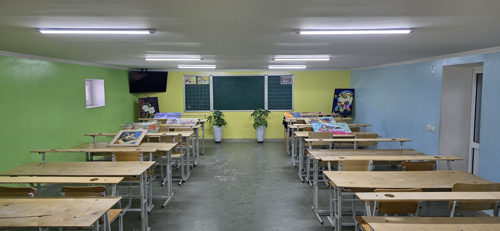
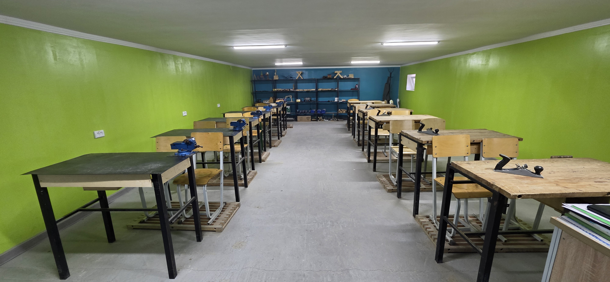

Zamonaviy ta'lim,
ishonchli kelajak
Denov tumanidagi 84-maktab har bir o'quvchida bilim, mahorat va yangi g'oyalarni tarbiyalaydi.
Maktab haqida
Denov 84-umumiy o'rta ta'lim maktabi ko'p yillik tarixga ega bo'lib, mintaqadagi yetakchi ta'lim muassasalaridan biri sifatida tanilgan. Maktabimiz zamonaviy pedagogik yondashuvlar va ilg'or metodikalar asosida ta'lim beradi.
Har bir o'quvchining individual qobiliyatini rivojlantirishga alohida e'tibor qaratamiz. Bilim olish bilan bir qatorda, o'quvchilarimizda mas'uliyat, halollik va vatanparvarlik tuyg'usini shakllantiramiz.
Bilim, halollik va mas'uliyat — har bir bitiruvchimiz olib chiqadigan uch asosiy qadriyat.
Denov 84-Maktab
Kelajak bunyodkorlari va bilim maskani
Maktabimizning Zamonaviy Xonalari
Xona rasmlarini ko'rish va barcha burchaklarini tomosha qilish uchun ustiga bosing.
 💻 IT va Dasturlash
💻 IT va Dasturlash
IT va Kompyuter Xonasi
Zamonaviy kompyuterlar va yuqori tezlikdagi internet bilan ta'minlangan IT xonasi.
 🧵 Tikuvchilik va Dizayn
🧵 Tikuvchilik va Dizayn
Tikuvchilik va Dizayn Xonasi
Qizlar uchun tikuv mashinalari va zamonaviy dizayn hunarmandchilik jihozlari ustaxonasi.
 🎵 Musiqa San'ati
🎵 Musiqa San'ati
Musiqa Xonasi
Milliy va zamonaviy musiqa asboblari bilan jihozlangan ijodiy fan xonasi.

🎨 Tasviriy San'atTasviriy San'at Xonasi
Chizmachilik, rangtasvir va estetik ijodiy ishlar olib boriladigan maxsus xona.

⚙️ TexnologiyaTexnologiya Xonasi
O'quvchilar amaliy ko'nikmalar, loyihalar va amaliy ustaxona mashg'ulotlarini o'taydigan joy.
Xona nomi
O'quv yili yakunigacha (Yozgi ta'til)
So'nggi Qo'ng'iroq va maktab yakunlanishiga qolgan vaqt:
Sinflar bo'yicha Dars Jadvali
Maktabimizdagi barcha sinflarning batafsil dars jadvalini ko'rish uchun quyidagi tugmani bosing:
📋 Sinflar va Dars Jadvallarini Ko'rish (2-sahifa)Qo'ng'iroq jadvali
☀️ 1-smena (6 soatli darslar)
🌙 2-smena (6 soatli darslar — 13:05 dan boshlanish)
Maktabimiz Faxri va G'oliblarimiz
Olimpiada G'oliblari
Matematika va Informatika fanlari bo'yicha tuman va viloyat bosqichi g'oliblari.
A'lochi O'quvchilar
Maktabimizning 150 dan ortiq o'quvchisi barcha fanlardan faqat "5" baholarga o'qishadi.
Sport Musobaqalari
Shaxmat, Futbol va Yengil atletika mezonlarida tuman chempionlari.
Maktab rahbariyati va ustozlarimiz
Maktab rahbariyati
Ismayilov Sherzod Chorievich
Oliy toifali pedagog
Soatov Faxriddin Abdurayimovich
Oliy toifa
Mitanov Sherzod Erkinovich
Oliy toifa
Alimardonova Muyassar Yaxshibaevna
Oliy toifa
Bizning o'qituvchilarimiz (Batafsil ma'lumot uchun ustiga bosing)
Eng yuqori pedagogik mahorat, ko'p yillik tajriba va tuman/viloyat miqyosidagi natijaga ega ustozlar.
Yuqori kasbiy va metodik tayyorgarlikka ega, o'quvchilari fan olimpiadalarida muvaffaqiyat qozongan ustozlar.
O'z ustida muntazam ishlaydigan va zamonaviy ta'lim texnologiyalarini qo'llaydigan tajribali pedagoglar.
Oliy ma'lumotli, yosh va intiluvchan, innovatsion usullarni qo'llovchi istiqbolli o'qituvchilar.
Yo‘ldosheva Madina Hasanovna
Psixolog
MutaxassisJumaeva Dildora Baxtiyorovna
Kadrlar bo‘yicha menejer
MutaxassisRustamov Akram Xolmuminovich
ChQBT rahbari
MutaxassisIsmailova Dildora Chorievna
Ona tili va adabiyoti o‘qituvchisi
1-toifaErdonova Feruza Xolbrevna
Ona tili va adabiyoti o‘qituvchisi
2-toifaAvazova Xurshida Normurotovna
Ona tili va adabiyoti o‘qituvchisi
2-toifaEshonqulova Afifabonu Tulqin qizi
Rus tili va adabiyoti o‘qituvchisi
1-toifaMamajonova Nilufar Abdubannon qizi
Rus tili va adabiyoti o‘qituvchisi
2-toifaMardanova Zarnigor Alisher qizi
Ingliz tili o‘qituvchisi
1-toifaKarimov Abdulxofiz Abduvaxob o‘g‘li
Ingliz tili o‘qituvchisi
1-toifaIsroilova Jamila
Ingliz tili o‘qituvchisi
1-toifaSultonmurodov Erkin Abdug`aniyevich
Matematika o‘qituvchisi
Oliy toifaChorieva Dildora Mamatmurotovna
Matematika o‘qituvchisi
1-toifaSafarova Saboxat Muxammadievna
Matematika o‘qituvchisi
2-toifaXujamkulov Shavkat Uralovich
Informatika o‘qituvchisi
1-toifaNosirjona Laylo Abdusalom qizi
Informatika o‘qituvchisi
MutaxassisOchilova Zulayxo Jahongir qizi
Fizika va Astronomiya o‘qituvchisi
MutaxassisOmonov Umid O‘ral o‘g‘li
Tabiiy fan va Fizika o‘qituvchisi
MutaxassisNasrullaev Ravshan Yangibaevich
Tarbiya o‘qituvchisi
1-toifaXasanov Xushnud Turg‘unovich
Tarix o‘qituvchisi
1-toifaBakirov Sherali Ubaydullaevich
Biologiya o‘qituvchisi
2-toifaShinaev Abdiraim Eshpo‘latovich
Kimyo o‘qituvchisi
2-toifaJo‘raeva Shaxlo Abdurayimovna
Geografiya o‘qituvchisi
Oliy toifaErgasheva Pokiza Anvar qizi
Geografiya o‘qituvchisi
2-toifaXaydarov Muhammad Zahriddinovich
Musiqa o‘qituvchisi
Oliy toifaFayzullaeva Iqbol Boyburievna
Tasviriy san’at o‘qituvchisi
Oliy toifaTerkashov Sirojiddin Abdusamatovich
Tasviriy san’at va chizmachilik o‘qituvchisi
1-toifaNormuminov Ulugbek Tojimurotovich
Jismoniy tarbiya o‘qituvchisi
1-toifaAkramov Xumoiddin Akmal o‘g‘li
Jismoniy tarbiya o‘qituvchisi
1-toifaDavlatova Etibor Abdunazarovna
Boshlang‘ich sinf o‘qituvchisi
Oliy toifaNormurodova Dilrabo Erkin qizi
Boshlang‘ich sinf o‘qituvchisi
1-toifaIrismatova Dilbar Chorievna
Boshlang‘ich sinf o‘qituvchisi
1-toifaJumaeva Sharifa Umarali qizi
Boshlang‘ich sinf o‘qituvchisi
2-toifaKeng Beriladigan Savollar (FAQ)
❓ 1-sinfga qabul hujjatlari qanday topshiriladi?
Javob: 1-sinfga qabul jarayonlari my.uzedu.uz portali orqali onlayn amalga oshiriladi.
❓ Maktabda qanday to'garaklar faoliyat yuritadi?
Javob: IT, Ingliz tili, Shaxmat va Futbol to'garaklari bepul yo'lga qo'yilgan.
❓ Maktabda darslar necha smenada tashkil etilgan?
Javob: Maktabimizda o'quv jarayoni 2 smenada (1-smena va 2-smena) 6 soatdan etib qulay tartibda tashkil qilingan.